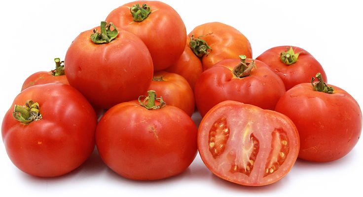

Fresh Tomatoes
Our farm-fresh Tomatoes are juicy, vibrant, and full of natural flavor. With their bright red color and refreshing taste, they’re perfect for salads, stews, sauces, and countless traditional dishes. Packed with vitamin C, potassium, and powerful antioxidants like lycopene, tomatoes help boost immunity, support heart health, and promote glowing skin. Low in calories yet bursting with nutrition, they’re a staple ingredient for healthy, balanced meals. Whether eaten raw or cooked, their sweet and tangy flavor adds depth to every recipe. Harvested at peak ripeness, we deliver them fresh from our fields to your kitchen, ensuring maximum taste and nourishment in every bite.

Cherry Red Tomatoes
Our farm-fresh Cherry Red Tomatoes are small, vibrant, and bursting with natural sweetness. Their juicy flavor and bright color make them perfect for salads, pasta dishes, garnishes, or simply enjoyed as a healthy snack. Packed with vitamin C, potassium, and powerful antioxidants like lycopene, they help boost immunity, support heart health, and promote radiant skin. Low in calories yet full of nutrition, these bite-sized tomatoes are a smart choice for balanced meals. Harvested at peak ripeness, we deliver them fresh from our fields to your kitchen, ensuring maximum flavor, juiciness, and nourishment in every handful.

Cherry Medley Tomatoes
Our farm-fresh Cherry Medley Tomatoes are a colorful mix of vibrant red, golden yellow, and deep orange varieties, each bursting with its own unique sweetness and flavor. Their juicy bite and eye-catching colors make them perfect for salads, pasta dishes, garnishes, or simply enjoyed as a healthy snack. Packed with vitamin C, potassium, and powerful antioxidants like lycopene, they help boost immunity, support heart health, and promote radiant skin. Low in calories yet full of nutrition, these bite-sized tomatoes bring both beauty and nourishment to your meals. Harvested at peak ripeness, we deliver them fresh from our fields to your kitchen, ensuring maximum flavor, juiciness, and vitality in every handful.
Yellow Bell Peppers
Our farm-fresh Yellow Peppers are bright, sweet, and bursting with flavor. Their vibrant color and crisp texture make them perfect for salads, stir-fries, grilling, or stuffing with your favorite fillings. Naturally rich in vitamin C, antioxidants, and dietary fiber, they help boost immunity, support healthy digestion, and promote glowing skin. Low in calories yet full of nutrition, yellow peppers are a delicious way to add both taste and health to your meals. Harvested at peak ripeness, we deliver them fresh from our fields to your kitchen, ensuring maximum crunch, sweetness, and nourishment in every bite.

Green Bell Peppers
Our farm-fresh Green Peppers are crisp, flavorful, and wonderfully versatile. With their bold taste and crunchy texture, they’re perfect for stir-fries, salads, stews, or stuffing with your favorite fillings. Naturally rich in vitamin C, antioxidants, and dietary fiber, they help boost immunity, support healthy digestion, and promote radiant skin. Low in calories yet packed with nutrition, green peppers are an excellent choice for healthy, balanced meals. Harvested at peak ripeness, we deliver them fresh from our fields to your kitchen, ensuring maximum crunch, flavor, and nourishment in every bite.

Orange Bell Peppers
Our farm-fresh Orange Peppers are sweet, vibrant, and bursting with natural goodness. Their bright color and crisp texture make them perfect for salads, stir-fries, grilling, or stuffing with your favorite fillings. Rich in vitamin C, antioxidants, and dietary fiber, they help boost immunity, support healthy digestion, and promote glowing skin. Low in calories yet full of nutrition, orange peppers add both flavor and health to your meals. Their natural sweetness balances beautifully with savory dishes, making them a versatile kitchen favorite. Harvested at peak ripeness, we deliver them fresh from our fields to your kitchen, ensuring maximum crunch, taste, and nourishment in every bite.

Red Bell Peppers
Our farm-fresh Red Bell Peppers are sweet, crisp, and bursting with vibrant flavor. Their bold color and juicy texture make them perfect for salads, stir-fries, grilling, or stuffing with your favorite fillings. Rich in vitamin C, antioxidants, and dietary fiber, they help boost immunity, support healthy digestion, and promote radiant skin. Naturally low in calories yet full of nutrition, red bell peppers are a delicious way to add both taste and health to your meals. Their natural sweetness balances beautifully with savory dishes, making them a versatile kitchen favorite. Harvested at peak ripeness, we deliver them fresh from our fields to your kitchen, ensuring maximum crunch, flavor, and nourishment in every bite.

Egg Plant
Our farm-fresh Eggplants are smooth, hearty, and naturally full of flavor. With their rich purple skin and tender flesh, they’re perfect for grilling, roasting, stews, or adding depth to traditional dishes. Eggplants are a great source of fiber, antioxidants, and essential minerals like potassium, which support heart health, digestion, and overall wellness. Low in calories yet satisfying, they’re an excellent choice for balanced, wholesome meals. Their mild taste absorbs flavors beautifully, making them versatile in both vegetarian and meat-based recipes. Harvested with care, we deliver them fresh from our fields to your kitchen, ensuring maximum taste, nutrition, and quality in every bite.